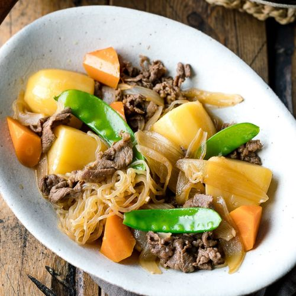

Nikujaga

Ingredients
- 52 wonton wrappers
- 1 lb ground turkey
- 2 cup cabbage shredded
- 1/2 cup green onions chopped
- 2 garlic cloves pressed
- 1 tbsp sesame oil
Instructions
- In a large bowl, combine ground turkey with onions, cabbage, pressed garlic, sesame oil, soy sauce and ground black pepper.
- Place an equal portion of filling into each wrapper.
- Brush the endges with water using your finger and seal the filling on the inside (see detailed instructions above).
- Place them on a baking sheet, leaving space between each one to avoid them sticking togehter.
- Preheat a skillet over medium-high with oil. Place gyoza in a skillet and pan fry until it turns golden brown — about 3 minutes. Add water and cover with a lid and steam for 3-4 minutes to cook the filling.
- Serve with your favortie sauce while gyoza is still nice and warm.